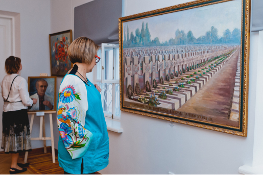

Музей відкрито 29 травня 1999 року в київській садибі, що має давню історію. Велику роль у становленні інституції відіграв його перший директор Володимир Тихенко. З 2014 року музей очолює Оксана Підсуха.


Про музей
Музей української діаспори представляє історію й мистецьку спадщину українців світу: від перших переселенців кін. ХІХ ст. до представників третьої хвилі еміграції, що опинилися за межами батьківщини під час Другої світової війни, а також їхніх нащадків.
Історія
До 2015 року діяв як Музей культурної спадщини (тоді відділ Музею історії міста Києва). У 2015 році за ініціативою директорки Оксани Підсухи та наукової команди заклад перейменовано на Музей української діаспори.
Місія
Збереження, дослідження та популяризація історії та культурної спадщини вихідців із України як важливої складової національної історії та культури. Засаднича мета діяльності закладу — поширення знань про видатних українців світу та діяльність українських закордонних інституцій, висвітлення їхньої ролі у боротьбі за незалежність України, збереженні українських традицій та розвитку національної культури, а також у створенні позитивного іміджу України поза її межами.
Фрагменти нової експозиції Музею української діаспори. Київ. 2021. Фото — Євген Генсюровський / Музей української діаспори
Колекція музею
В основу фондів Музею було покладено колекцію творів українських мистців із різних країн світу, передану закладу Національною Комісією з питань повернення в Україну культурних цінностей (діяла з 1992 до 1999 року, Голова О. К. Федорук). Як результат діяльності цієї комісії до фондів музею потрапили, зокрема, колекції видатних українських американських художників Людмили Морозової та Олекси Булавицького, збірка творів українських австралійських мистців, роботи представників династії Кричевських та ін.
Новий етап формування колекції почався у 2015 році. Активне налагодження прямих контактів музею з українськими закордонними інституціями та окремими представниками діаспори дозволило суттєво збільшити колекцію музею. За останні 8 років до фондів надійшли твори Емми Андієвської (США – Німеччина), Анатоля Коломийця (США), представників мистецької династії Козаків (США), Олени Овчиннікової (США). Результатом співпраці з мисткинею Катериною Кричевською-Росандіч стало значне поповнення колекції творів представників династії Кричевських. Фонди збагатилися також рідкісними історичними документами перших українських товариств взаємодопомоги та кредитних спілок початку ХХ століття (США), архівними матеріалами та світлинами останнього Президента УНР в екзилі Миколи Плав’юка (Канада), особистими речами героя російсько-української війни Маркіяна Паславського (США), спортивною колекцією з діаспори.
Фонди Музею української діаспори складають близько 20 000 експонатів
Нова експозиція
29 травня 2021 року Музей української діаспори відкрив нову експозицію, яка розкриває понад сторічний життєпис світових українців. У фокусі експозиції — ключові епізоди еміграції з України, долі окремих представників діаспори, видатні зразки творчої спадщини українців світу та діяльність деяких українських закордонних інституцій. Розповіді про них відкривають шлях до пізнання історії та культурного спадку багатомільйонної української світової спільноти.
Керівниця та головна кураторка проєкту: Оксана Підсуха
Кураторська група: Оксана Підсуха, Ганна Лексіна, Назар Розлуцький та Володимир Таран
Серед історичних раритетів, представлених в експозиції, — особисті речі гетьмана Павла та гетьманича Данила Скоропадських, пам’ятки з ДіПі таборів, документи останнього Президента УНР в екзилі Миколи Плав’юка. Мистецька спадщина українців світу представлена, зокрема, творами представників династії Кричевських, Людмили Морозової, Анатоля Коломийця, першими аудіозаписами Українського Національного хору Олександра Кошиця.
Фрагменти нової експозиції Музею української діаспори. Київ. 2021. Фото — Євген Генсюровський / Музей української діаспори

Кураторська група зі створення нової експозиції музею. Зліва направо: Володимир Таран (дизайнер), Оксана Підсуха, Ганна Лексіна, Назар Розлуцький. Музей української діаспори. 2021. Фото — Євген Генсюровський / Музей української діаспори
Музей української діаспори. Вид згори. 2016. Музей української діаспори
Вибрані виставкові та видавничі проєкти
29 травня 2021 року Музей української діаспори відкрив нову експозицію, яка розкриває понад сторічний життєпис світових українців. У фокусі експозиції — ключові епізоди еміграції з України, долі окремих представників діаспори, видатні зразки творчої спадщини українців світу та діяльність деяких українських закордонних інституцій. Розповіді про них відкривають шлях до пізнання історії та культурного спадку багатомільйонної української світової спільноти.
Кураторка проєкту: Ганна Лексіна
Вперше в Україні експонувалися понад 60 творів живопису та графіки шести українсько-австралійських художників — Володимира Савчака, Тимофія Мессака, Петра Кравченка, Степана Хвилі, Леоніда Денисенка, представників третьої хвилі еміграції, та сучасної австралійської та української художниці Світлани Солдатової. У проєкті були представлені роботи з фондів Музею української діаспори та Бережанського краєзнавчого музею. У межах проєкту Музеєм української діаспори та видавництвом “Антиквар” було підготовлене спеціальне видання, присвячене Українській Австраліані.
Виставку «Художники-Амбасадори. Українська Австраліана» відкриває Тимчасовий повірений у справах Посольства Австралії в Україні Джеймс Нейшн. Музей української діаспори. 21 червня 2017. Фото — Олег Гриценко


На відкритті виставкового проєкту “Художники-Амбасадори. Українська Австраліана”. Музей української діаспори. 21 червня 2017. Фото — Олег Гриценко
2019 року в Музеї української діаспори відбулося відкриття історичного проєкту «Нью-Йорк – Іловайськ: Вибір», присвяченого Маркіяну Паславському: американському українцю, випускнику американської військової академії Вест-Пойнт, учаснику помаранчевого майдану та Революції гідності, добровольцю, який із початком російсько-української війни пішов на фронт і загинув у 2014 році під Іловайськом. Проєкт організовано спільно з Національним музеєм Революції гідності. На виставці були представлені артефакти з фондів обох музеїв, які розкривають світогляд та життєву історію героя, а також видання “Заклик діяти: слова Маркіяна Паславського”.
Куратори проєкту: Назар Розлуцький та Олександр Бриндіков
2019 року в Музеї української діаспори відбулося відкриття історичного проєкту «Нью-Йорк – Іловайськ: Вибір», присвяченого Маркіяну Паславському: американському українцю, випускнику американської військової академії Вест-Пойнт, учаснику помаранчевого майдану та Революції гідності, добровольцю, який із початком російсько-української війни пішов на фронт і загинув у 2014 році під Іловайськом. Проєкт організовано спільно з Національним музеєм Революції гідності. На виставці були представлені артефакти з фондів обох музеїв, які розкривають світогляд та життєву історію героя, а також видання “Заклик діяти: слова Маркіяна Паславського”.
Кураторка проєкту: Оксана Підсуха
Кураторська група: Ганна Лексіна, Олександр Кухар
Проєкт представив в офлайн, онлайн та мультимедійному форматі широку ретроспективу життя та творчості художниці, мистецьку спадщину та архівні матеріали з кількох музеїв і приватних колекцій. Офлайн виставки в Музеї української діаспори та Національному музеї «Київська картинна галерея», онлайн виставка на фейсбук-сторінці Музею української діаспори, мультимедійні виставки в чотирьох музеях України, а також перше науково-мистецьке видання про мисткиню охопили широку міжнародну аудиторію, розкрили маловідомі сторінки історії ХХ століття, віддали прижиттєву шану художниці та меценатці.
Оксана Підсуха та Ганна Лексіна презентують видання «Катерина Кричевська-Росандіч. Дороги. Straßen. Roads» в Національному музеї “Київська картинна галерея”. 12 жовтня 2021. Фото — Євген Генсюровський / Музей української діаспори
Фрагмент експозиції виставки “Дороги і люди” (у межах проєкту «Катерина Кричевська-Росандіч. Дороги. Straßen. Roads»). Музей української діаспори. 29 липня 2021. Фото — Євген Генсюровський / Музей української діаспори